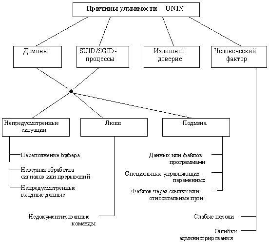

|
8.7. Причины существования уязвимостей
в UNIX-системах
Рассмотрев выше достаточно много фактического
материала, мы коснемся причин, по которым
описанные нарушения безопасности UNIX имели место,
и попытаемся их классифицировать. Сразу
оговоримся, что эта классификация ни в коей мере
не претендует на новизну или полноту - кому
интересна эта тема, предлагаем обратиться к
более серьезным научным работам [9, 23]. Здесь же мы
опишем вполне понятные читателю причины, по
которым, тем не менее, происходит до 90% всех
случаев вскрытия UNIX-хостов.
- Наличие демонов.
- Механизм SUID/SGID-процессов.
Эти механизмы, являющиеся неотъемлемой частью
идеологии UNIX, были и будут лакомым кусочком для
хакеров, т. к. в этом случае пользователь всегда
взаимодействует с процессом, имеющим большие
привилегии, чем у него самого, и поэтому любая
ошибка или недоработка в нем автоматически ведет
к возможности использования этих привилегий.
- Излишнее доверие.
Об этом уже достаточно говорилось выше.
Повторим, что в UNIX достаточно много служб,
использующих доверие, и они могут тем или иным
способом быть обмануты.
К этим трем причинам нельзя не добавить
следующую:
- Человеческий фактор с весьма разнообразными
способами его проявления - от легко
вскрываемых паролей у обычных пользователей до
ошибок у квалифицированных системных
администраторов, многие из которых как раз и
открывают путь для использования механизмов
доверия.

Рис. 8.2. Причины уязвимости UNIX
при атаках на телекоммуникационные службы.
Рассмотрим теперь более подробно причины, по
которым оказываются уязвимы демоны и SUID/SGID-процессы:
- возможность возникновения непредусмотренных
ситуаций, связанных с ошибками или недоработками
в программировании;
- наличие скрытых путей взаимодействия с
программой, называемых "люками" ;
- возможность подмены субъектов и объектов
различным образом.
К первым можно отнести классическую ситуацию с
переполнением буфера или размерности массива
(примеры см. п. 8.4.1.2 и 8.6.2), ведущую к затиранию
области стека и записи туда специальных команд,
которые будут затем исполнены. Заметим сразу, что
этот способ, несмотря на свою популярность,
всегда будет системозависимым и ориентирован
только на конкретную платформу и версию UNIX.
Хорошим примером непредусмотренной ситуации в
многозадачной операционной системе является
неправильная обработка некоторого специального
сигнала или прерывания. Часто хакер имеет
возможность смоделировать ситуацию, в которой
этот сигнал или прерывание будет послано (в UNIX'е
посылка сигнала решается очень просто - командой
kill - см. пример 8.6.2).
Наконец, одна из самых распространенных
программистских ошибок - является неправильная
обработка входных данных (это является некоторым
обобщением случая переполнения буфера.) По
свидетельству [24], ими в 1990 и 1995 годах были
подвергнуты автоматизированному тестированию
около 80 программ на 9 различных платформах UNIX -
специальная программа подавала на вход строки
длиной до 100000 символов. Результатом явилось то,
что 25- 33% в 1990 г. и 18- 23% в 1995 г. работали
некорректно - зависали, сбрасывали аварийный
дамп и т. п. (Интересно, что в коммерческих версиях
UNIX этот процент доходил до 43, тогда как в свободно
распространяемых он был меньше 10.) Впрочем,
справедливости ради надо отметить, что только 2
программы-демона вели себя таким образом в 1990 г.,
а через 5 лет эти ошибки были исправлены. Ну, а
если программа неправильно обрабатывает
случайные входные данные, то очевидно, что можно
подобрать такой набор специфических входных
данных, которые приведут к желаемым для хакера
последствиям. Примером этого может служить innd
(8.6.4).
Люком, или "черным входом" (backdoor) часто
называют оставленную разработчиком
недокументированную возможность взаимодействия
(чаще всего входа в систему), например, известный
только разработчику универсальный "пароль"
. Люки оставляют в конечных программах
вследствие ошибки, не убрав отладочный код или
вследствие необходимости продолжения отладки
уже в реальной системе в связи с ее высокой
сложностью или же их корыстных интересов. Люки -
это любимый путь входа в удаленную систему не
только у хакеров, но и у журналистов и режиссеров
вкупе с подбором "главного" пароля
перебором за минуту до взрыва, но в отличие от
последнего способа, люки реально существуют.
Классический пример люка - это, конечно,
отладочный режим в sendmail.
Наконец, вследствие многих особенностей UNIX,
таких как асинхронное выполнение процессов,
развитый командный язык и файловая система,
злоумышленниками могут быть использованы
механизмы подмены одного субъекта или объекта
другим. Например, в рассмотренных выше примерах
часто применялась замена имени файла, имени
получателя и т. п. именем программы
(см. 8.5.2.3 и 8.5.2.4.3). Аналогично может быть выполнена
подмена некоторых специальных переменных. Так,
для некоторых версий UNIX существует атака,
связанная с подменой символа разделителя команд
или опций на символ "/" . Это приводит к тому,
что когда программа вызывает /bin/sh, вместо него
вызывается файл bin с параметром sh в текущем
каталоге. Похожая ситуация возникает при атаке
на telnetd (см. 8.6.1). Наконец, очень популярным в UNIX
видом подмены является создание ссылки (link)
на критичный файл. После этого файл-ссылка
некоторым образом получает дополнительные права
доступа, и тем самым осуществляется
несанкционированный доступ к исходному файлу.
Аналогичная ситуация с подменой файла возникает,
если путь к файлу определен не как абсолютный
(/bin/sh), а относительный (../bin/sh или $(BIN)/sh). Такая
ситуация имела место в рассмотренной уязвимости
telnetd.
И последнее - нельзя приуменьшать роль человека
при обеспечении безопасности любой системы.
Возможно, он даже является слабейшим звеном. Про
необходимость выбора надежных паролей уже
говорилось. Неправильное администрирование -
такая же актуальная проблема, а для UNIX она
особенно остра, т. к. сложность администрирования
UNIX-систем давно уже стала притчей во языцех и
часто именно на это упирают конкуренты. Но за все
надо платить, и это обратная сторона
переносимости и гибкости UNIX. Более того, если
говорить о слабости человека, защищенные системы
обычно отказываются и еще от одной из основных
идей UNIX - наличия суперпользователя, имеющего
доступ ко всей информации и никому не
подконтрольного. Его права могут быть
распределены среди нескольких людей:
администратора персонала, администратора
безопасности, администратора сети и т. п., а сам он
может быть удален из системы после ее
инсталляции. В результате вербовка одного из
администраторов не приводит к таким
катастрофическим последствиям, как вербовка
суперпользователя.
Настройки некоторых приложений, того же sendmail,
настолько сложны, что для поддержания
работоспособности системы требуется
специальный человек - системный администратор, -
но даже он, мы уверены, не всегда знает о всех
возможностях того или иного приложения и о том,
как правильно их настроить. И если хакеры смогли
проникнуть в систему, то это не всегда говорит о
халатности администратора, а, зачастую, о его
ограниченном знании того или иного продукта.
|